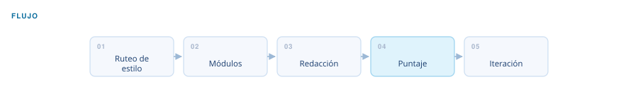
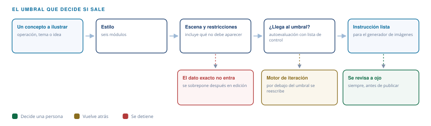

Automatización financiera · Nano Banana Prompts V2
Briefs visuales financieros
Instrucciones de imagen con criterio financiero para generadores como Gemini.
El problema
Un generador de imágenes no entiende de finanzas: si se le pide una infografía con datos, devuelve algo decorativo con números inventados. Sirve para la escena, no para el dato.
Entra
Un concepto, una operación corporativa o un tema a ilustrar.
Sale
Instrucción lista para el generador, con la escena, el estilo y lo que no debe aparecer.
El flujo
Cinco pasos, y el último es un lazo. Mientras el puntaje no llegue al mínimo, la instrucción vuelve a redacción en vez de entregarse.

Qué decide y cómo
Dos cosas quedan fuera por diseño: el dato exacto, que no se le pide al generador, y la instrucción que no llega al umbral de calidad.

Estilo
Seis: infografía, diagrama, editorial, mapa, ilustración y figura tridimensional.
Restricciones
Toda instrucción incluye qué no debe aparecer en la imagen.
Umbral
Si el puntaje de calidad no llega al mínimo, entra al motor de iteración en vez de entregarse.
Control de calidad
Autoevaluación con una lista de control antes de entregar; por debajo del umbral se reescribe. El resultado se revisa siempre a ojo antes de publicarse.
Arquitectura
- 6 módulos de estilo
- Banco de metáforas visuales
- Composiciones financieras
- Motor de iteración
Qué construí
Armé el árbol de ruteo, el banco de metáforas y la lista de control de calidad.
¿Un flujo así para tu proceso?
Este nació de un cuello de botella real. Si tienes un proceso financiero que se repite cada mes, probablemente se pueda sistematizar igual.